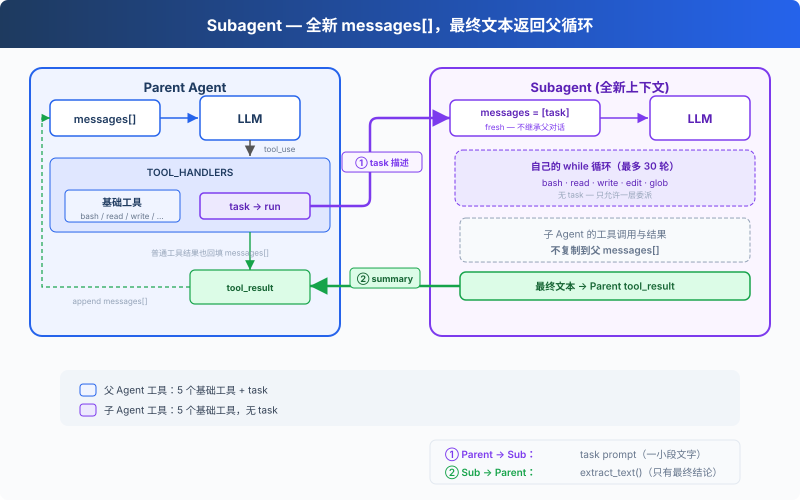

s06: Subagent — 给子任务一段独立上下文
s01 → s02 → s03 → s04 → s05 → s06 → s07 → s08 → ... → s16 → s17
Subagent 从全新的
messages[]开始。最终文本返回父循环，中间对话不会进入父上下文。Harness 层: 委派 — 在另一段对话上下文中处理一个明确的子任务。
问题
Agent 在修一个 bug。为了追踪调用链，它读取了许多文件；每次工具调用和结果都会留在父循环的 messages[] 中。调用链已经弄清以后，多数中间细节不再需要，却仍然占用上下文。
解决方案

调用 task 时，会同步运行一个使用全新 messages[] 的嵌套 Agent Loop。循环结束后，它的最终文本会成为父对话中的工具结果。
这里隔离的是消息，不是进程或文件系统。父 Agent 与子 Agent 共享 WORKDIR，写文件和命令仍会影响同一个工作区。子 Agent 拥有五个基础工具，但没有 task；它的工具调用与父 Agent 使用同一组权限和生命周期 Hooks。
工作原理
run_subagent 创建新的消息列表，运行嵌套循环，并返回最终文本：
SUB_TOOLS = list(BASE_TOOLS) # 不含 task 工具
def run_subagent(prompt: str) -> str:
messages = [{"role": "user", "content": prompt}]
for _ in range(30):
response = client.messages.create(
model=MODEL, system=SUB_SYSTEM,
messages=messages, tools=SUB_TOOLS, max_tokens=8000,
)
messages.append({"role": "assistant", "content": response.content})
tool_calls = [
block for block in response.content if block.type == "tool_use"
]
if not tool_calls:
return extract_text(response.content) or "(no summary)"
results = []
for block in tool_calls:
output = execute_tool(block, SUB_HANDLERS)
results.append({... "content": output})
messages.append({"role": "user", "content": results})
return "Subagent stopped after 30 turns without a final answer."
主 Agent 调用时，跟调其他工具一样：
TASK_TOOL = {
"name": "task",
"description": "Run a subagent with fresh conversation context and return its final text.",
"input_schema": {
"type": "object",
"properties": {"prompt": {"type": "string"}},
"required": ["prompt"],
},
}
TOOLS = [*BASE_TOOLS, TASK_TOOL]
TOOL_HANDLERS = {**BASE_HANDLERS, "task": run_subagent}
实际边界如下：
| 决策 | 选择 | 原因 |
|---|---|---|
| 对话 | 全新的 messages[] |
不把父对话复制给子 Agent |
| 执行 | 同一进程和 WORKDIR |
两个循环都能看到文件系统修改 |
| 返回值 | 只返回最终文本 | 子 Agent 的工具调用和结果不进入父消息列表 |
| 委派深度 | SUB_TOOLS 中没有 task |
本章只允许一层委派 |
| 工具策略 | 共享 Hooks | 父子循环使用相同的权限检查 |
父 Agent 与其他工具一样，通过 handler map 分发 task。子 Agent 使用 SUB_SYSTEM、SUB_TOOLS 和自己的局部 messages 列表。
试一下
cd learn-claude-code
python s06_subagent/code.py
试试这些 prompt：
Use a subtask to find what testing framework this project uses（子 Agent 去读文件，主 Agent 只收结论）Delegate: read all .py files in agents/ and summarize what each one doesUse a task to create s06_subagent/example/string_tools.py with a slugify(text: str) function, then verify it from the parent agent
观察重点：是否出现 [Subagent started] / [Subagent done]？子 Agent 的工具调用是否以 [sub] ... 输出？父 Agent 是否只接收到 task 返回的最终文本？
接下来
Agent 现在能拆任务了。但每个任务需要的知识不一样：改前端组件需要知道 React 规范，写 SQL 需要知道表结构。这些知识全塞进 system prompt，上下文直接爆了。
s07 Skill Loading → 技能按需注入，不在 system prompt 里堆文档。用到的时候才加载，和读文件一样自然。